<header style="background-color: #f15d22; color: " >
  <div class="container-fluid" >
    <div class="row">
      <div class="col-md-6 d-flex justify-content-center align-items-center shovelhero">
        <div style="background-color: white; " class="shoveltext">
          <h1 style="font-size: 2em;">Shovel-ready <em>NYC 25x25</em> streets</h1>
          <p>There is a known-solution to inequitable, ineffective, and unsafe streets: redesigning those streets with changes that prioritize moving people over cars. What follows are five site studies that demonstrate what is possible when community-driven planning is catalyzed by technology.</p>
          <a href="#about" target="_self"><button class="btn btn-success btn-lg" type="button">About the project</button></a>
        </div>
      </div>
      <div class="col-md-6">
            <style media="screen,print">
              #g-nyc-remix-box ,
              #g-nyc-remix-box .g-artboard {
                margin:1em; auto;
              }
              #g-nyc-remix-box p {
                margin:0;
              }
              #g-nyc-remix-box .g-aiAbs {
                position:absolute;
              }
              #g-nyc-remix-box .g-aiImg {
                position:absolute;
                top:0;
                display:block;
                width:100% !important;
              }
              #g-nyc-remix-box .g-aiSymbol {
                position: absolute;
                box-sizing: border-box;
              }
              #g-nyc-remix-box .g-aiPointText p { white-space: nowrap; }
              #g-nyc-remix-Artboard_1 {
                position:relative;
                overflow:hidden;
              }
              #g-nyc-remix-Artboard_1 p {
                font-family:georgia,'times new roman',times,serif;
                font-weight:bold;
                line-height:44px;
                filter:alpha(opacity=100);
                -ms-filter:progid:DXImageTransform.Microsoft.Alpha(Opacity=100);
                opacity:1;
                letter-spacing:0em;
                font-size:37px;
                text-align:left;
                color:rgb(0,0,0);
                text-transform:none;
                padding-bottom:0;
                padding-top:0;
                mix-blend-mode:normal;
                font-style:normal;
                height:auto;
                position:static;
              }

    </style>

<div id="g-nyc-remix-box" class="ai2html">

  <!-- Artboard: Artboard_1 -->
  <div id="g-nyc-remix-Artboard_1" class="g-artboard" style="" data-aspect-ratio="1" data-min-width="0">
<div style="padding: 0 0 100% 0;"></div>
    
    <a href="{{ site.baseurl }}/bronx.html" class="maplink"><div id="g-ai0-1" class="g-Layer_1 g-aiAbs" style="top:17.5%;left:61.4157%;width:4.3333%;">
      <p style="font-family: 'Montserrat', system-ui, sans-serif;" class="maplink">2</p>
    </div></a>
    <a href="{{ site.baseurl }}/manhattan.html"><div id="g-ai0-2" class="g-Layer_1 g-aiAbs" style="top:29%;left:50.7496%;width:4.3333%;">
      <p style="font-family: 'Montserrat', system-ui, sans-serif;" class="maplink">3</p>
    </div></a>
    <a href="{{ site.baseurl }}/queens.html"><div id="g-ai0-3" class="g-Layer_1 g-aiAbs" style="top:42.6667%;left:64.2557%;width:4.3333%;">
      <p style="font-family: 'Montserrat', system-ui, sans-serif;" class="maplink">4</p>
    </div></a>
    <a href="{{ site.baseurl }}/brooklyn.html"><div id="g-ai0-4" class="g-Layer_1 g-aiAbs" style="top:61%;left:48.615%;width:3.5%;">
      <p style="font-family: 'Montserrat', system-ui, sans-serif;" class="maplink">1</p>
    </div></a>
    <a href="{{ site.baseurl }}/statenisland.html"><div id="g-ai0-5" class="g-Layer_1 g-aiAbs" style="top:76.5%;left:21.4224%;width:4.3333%;">
      <p style="font-family: 'Montserrat', system-ui, sans-serif;" class="maplink">5</p>
    </div></a>
  </div>

</div>
</div>
</div>
</header>

{% include remixNav.html %}

<div class="p1-body reportStyle" id="about">
    <div class="container">
        <div class="row justify-content-center" >
            <div class="col-md-8 reportStyle">
              <div class="card text-dark bg-light mb-3" style="max-width: 100%">
                <div class="card-body" style="padding: 3%">
                  <h5 class="card-title"><strong>Message from Tiffany Chu of Remix and Danny Harris of Transportation Alternatives</strong></h5>
                  <p class="card-text"><em>NYC 25x25</em> <em>Streets</em> marks a first-of-its-kind partnership between Transportation Alternatives (TA), the New York City-based advocacy organization with a mission to reclaim New York City&rsquo;s streets from cars, and Via, the global transportation technology company. This collaboration was built using Remix, a collaborative platform for transportation planning and decision-making, and inspired by <em>NYC 25x25</em>, a plan to convert 25 percent of New York City&rsquo;s space for cars into space for people by 2025.</p>
                  <a href="#" class="btn btn-primary" data-bs-toggle="collapse" data-bs-target="#collapseExample" aria-expanded="false" aria-controls="collapseExample">Keep reading</a>
                  <div class="collapse" id="collapseExample">
                  	<p style="padding-top: 1em">Like metropolitan areas around the world, New York City needs innovative solutions that allow our streets to reflect the dominant modes of travel most New Yorkers take &mdash; walking, biking, and public transit. The redesigns in this project cover some of New York City&rsquo;s most lethal and problematic streets and were created with a new, faster, more responsive process because to reduce car space 25 percent by 2025 we cannot go intersection by intersection. Shown here are proposals that include input from urban city planners, who are experts in the technical components of street design, and from advocates and community members, who are experts in their local streets. This project demonstrates a new way to redesign streets by creating technical, actionable plans that incorporate globally-recognized best practices for street design and reflect specific input from the street users who best understand the need for change.</p>
                  	<p>We must radically rethink the infrastructure that shapes transportation and our hope for this partnership is to inspire cities around the world to convert space for cars into space for people, and to pursue these goals in a more efficient and collective way. Working together and using the right tools we can create actionable designs for a safer, more efficient, and more equitable use of public space &mdash; designed for people, pedestrians, cyclists, seniors, kids, and small businesses &mdash; to make any city as dynamic as it can be.</p>
              	</div>
                </div>
              </div>

              <p style="padding-top: .5em"></p>

              <p>In early 2021, Transportation Alternatives (TA) launched <em><a href="https://nyc25x25.org/">NYC 25x25: A Challenge to New York City&rsquo;s Next Leaders to Give Streets Back to People</a></em> which proposed a radical reimagining of how public space is allocated and used in New York City. The plan included a challenge to the next leaders of New York City: convert 25 percent of current parking and driving space into space for people by 2025. By giving a fraction of the street back to people, the City of New York can save lives, improve air quality, build climate resilience into every roadbed, and set the tone for the future of New York as a vibrant city with accessible, efficient transportation and a robust, thriving street culture.</p>
              <p>Mayor-elect Eric Adams endorsed <em>NYC 25x25</em> along with a coalition of more than 200 disability rights, economic, educational, environmental, labor, and public health organizations across New York City. Now, we present a set of designs that reflect the input and expertise of local communities and planning experts, showcasing a new collaborative planning platform to accelerate the work of reclaiming space from cars. These designs were guided by the on-the-ground expertise of TA&rsquo;s five borough organizers and committees of volunteer activists, and created using Remix Streets&mdash; Via&rsquo;s street design and mapping software &mdash; to demonstrate how collaborative planning could direct life-saving and equitable designs.</p>
              <p>This project offers a new paradigm for street planning and advocacy, a collaborative and more efficient way to create actionable plans for safe, livable, people-centric streets. It should also serve as a library of resources for advocates, planners, and engineers looking to bring a <em>NYC 25x25</em> vision to the most unsafe streets in their neighborhood.</p>

              <h3>The problem</h3>

              <p>New York City&rsquo;s streets are at a standstill. The congestion citywide results in delays to New Yorkers&rsquo; commutes, routine travel, and costs the city millions of dollars in operational inefficiencies. Even worse, not only are New York City streets consistently grid-locked but they are unsafe &mdash; each year hundreds of people are killed in traffic violence in New York, and dozens of thousands are injured.</p>
              <p>New York advocates, staff, and politicians are aligned on a Vision Zero future. New York can be a leader on the use of public space and lead America in a new direction that prioritizes infrastructure for people and not cars. To reduce street fatalities to zero will require political courage and commitment, funding, sustained organizing and pressure from advocates, and the delivery of bold, visionary projects. The pace at which we enact change must accelerate and outpace the current operating paradigm that results in streets that are car-centric, unsafe and inequitable.</p>

              <p><strong>Car-Centric Streets</strong></p>
              <p>Policies and practices that prioritize car movement and storage directly disadvantages the majority of New Yorkers. For example, though 96 percent of New Yorkers walk to and from public transit, there are three million free on-street parking spaces and 4.4 million cars and trucks through city neighborhoods every day.</p>

              <p><strong>Unsafe Streets</strong></p>
              <p>Today, traffic violence is at the highest levels it has been at any time in the past eight years: car crashes seriously injure or kill a New Yorker every two hours. Nearly one third of all New Yorkers have been in a traffic crash, and 70 percent of New Yorkers know someone who has been injured or killed in a crash.</p>

              <p><strong>Inequitable Streets</strong></p>
              <p>The inequity of New York City streets is more than spatial; it is racial and economic. Low-income communities and communities of color bear the greatest burden &mdash; longer commutes, hotter neighborhoods, worse air pollution, higher asthma rates, more health conditions related to car pollution, and more premature deaths. The Bronx &mdash; the borough with the highest rate of poverty &mdash; is also home to the highest childhood asthma rates, a medical condition correlated with poor air quality and high rates of traffic and car emissions. Additionally, the non-car infrastructure is lacking and unsafe: the Bronx has six percent of all on-street protected bike lanes in New York City and only six percent of bike share docks.</p>

              <h3>The Solution: Collaborative, Community-Driven Planning</h3>

              <p>There is a known-solution to inequitable, ineffective, and unsafe streets: redesigning those streets with changes that prioritize moving people over cars. While the technical changes that are required to improve New York City&rsquo;s streetscape are well-documented, the rate of change in New York is not on par with the magnitude of the challenge and is rarely designed to capture and reflect community input.</p>

              <p>What follows are five site studies that demonstrate what is possible when community-driven planning is catalyzed by technology. These site studies are the product of data, research, best practices in street design, and community input. The results are five tactical solutions to five challenging corridors and an example of what&rsquo;s possible when people come together to make our streets safer.</p>

              <p>Additionally, built with Remix, these site studies also showcase the ability for a cloud-based planning tool that uses real data to facilitate collaboration and community input in two directions: from the top down, such as when the New York City Department of Transportation seeks community input on a plan for a street redesign, and from the bottom up, such as when a community seeks changes to a streets from the Department of Transportation.</p>


<div class="reportbtn d-flex justify-content-between">
	<a href="#top"><button type="button" class="btn btn-outline-secondary">Back to top</button></a>
	<a href="{{ site.baseurl }}/brooklyn.html"><button type="button" class="btn btn-outline-secondary">Site study: Brooklyn <i class="bi bi-chevron-right"></i></button></a>
</div>
</div>
</div>
</div>
</div>